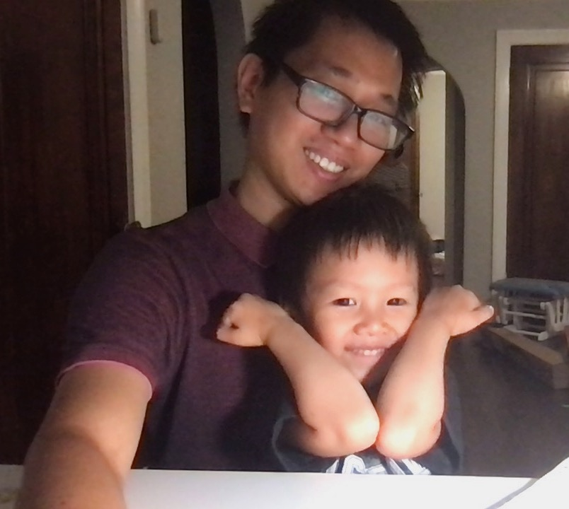

|
I am a Postdoctoral Associate in Mathematics at Western University. My mentors are Professors Jan Minac and Lyle Muller. I am a number theorist by training: I studied heights of motives and special values of zeta functions in graduate school. Recently, my research has expanded to the representation theory of associative algebras over fields of finite characteristics, Galois modules, spectral graph theory, dynamical systems, and computational neuroscience. A particular exciting topic of my research is the networks of nonlinear oscillators-which have been applied to study the behavior of insects, patterns of social behaviors, neural systems, and physical systems. For such networks, their topology (i.e., the structure of connections) plays a fundamental role in understanding the existence and stability of the oscillators. In my research, I use tools from both pure and applied mathematics to study the structure of these networks. I obtained my Ph.D. at the University of Chicago in December 2020. My advisor is Professor Kazuya Kato. My dissertation is available here. Before coming to Chicago, I was an undergraduate student at Vietnam National University. I wrote my senior thesis under the supervision of Professor Ralph Greenberg. Here is my CV Email: tungnt@uchicago.edu Phone: (1) 312-478-7812 Office: TAAC 28, 5607 S Drexel Ave, Chicago, IL 60637 |
 |
|---|
1. Tung T. Nguyen, Heights and Tamagawa numbers of motives (Accepted to Journal of Pure and Applied Algebra.) (link to Arxiv)
2. Tung T. Nguyen, Tamgawa number conjecture for a p-adic family of F-crystals (link to Arxiv)
3. Lyle Muller, Jan Minac, Tung T. Nguyen, An algebraic approach to the Kuramoto model (Published in Physical Review E). (Arxiv version)
4. Jan Minac, Nguyen Duy Tan, Tung T. Nguyen, Further insights into the mysteries of the values of zeta functions at integers (submitted). (Arxiv version)
5. Roberto Budzinski, Tung T. Nguyen, Jacqueline Đoàn, Ján Mináč, Terrence J. Sejnowski, Lyle Muller, A simple geometry unites synchrony, chimeras, and waves in nonlinear oscillator networks (submitted). (Arxiv version)
6. Tung T. Nguyen, Roberto Budzinski, Jacqueline Đoàn, Federico Pasini, Ján Mináč, Lyle Muller, Equilibria in Kuramoto oscillator networks: An algebraic approach (submitted). (Arxiv version)
7. Ján Mináč, Nguyen Duy Tan, Tung T. Nguyen, Fekete polynomials, quadratic residues, and arithmetic (submitted). (Arxiv version)
8. Tung T. Nguyen, Jacqueline Đoàn, Federico Pasini, Ján Mináč, Lyle Muller, Join of circulant matrices (submitted). (Arxiv version)
9. Jon Merzel, Ján Mináč, Lyle Muller, Federico Pasini, Tung T. Nguyen, Spectral perturbation by rank one matrices (submitted). (Arxiv version).
10. Frank Chemotti, Jan Minac, Tung T. Nguyen, Andrew Schultz, John Swallow, Nguyen Duy Tân, Quaternion algebras and square power classes over biquadratic extensions (submitted)(Arxiv version).
11. Lauren Heller, Ján Mináč, Tung T. Nguyen, Andrew Schultz, and Nguyễn Duy Tân, Module structure of the parameterizing space of elementary p-abelian extensions in a certain free case (to be submitted in early February).
12. Jon Merzel, Ján Mináč, Lyle Muller, Federico Pasini, Tung T. Nguyen, Spectral perturbation by rank-m matrices (to be submitted in early February).
13. Tung T. Nguyen, Jacqueline Đoàn, Federico Pasini, Ján Mináč, Lyle Muller, Join of normal matrices with constant row sums (in preparation).
- Mini-workshop on Algebra and homogeneous spaces
- Online seminar on quadratic forms, linear algebraic groups and beyond
- Recorded talk and slide
Arizona Winter School 2017: Perfectoid spaces
Interactions between Representation Theory and Algebraic Geometry
Arizona Winter School 2018: Iwasawa theory
Arithmetic of Low-Dimensional Abelian Varieties, ICERM 2019
PCMI 2021 Graduate Summer School, Number Theory Informed by Computation, July 2021.
Western-Fields Seminar Series in Networks, Random Graphs, and Neuroscience
Click here for a wonderful passage by Hermann Hesse about trees.
{kind=link}